Hello World!
Contents
Hello World!#
This section explains how the software installed so far can be used to compile a code for the microcontroller.
Windows/Linux#
Create a folder with any name you like on the desktop.
Open that folder. Follow the images below to open it in VSCode.
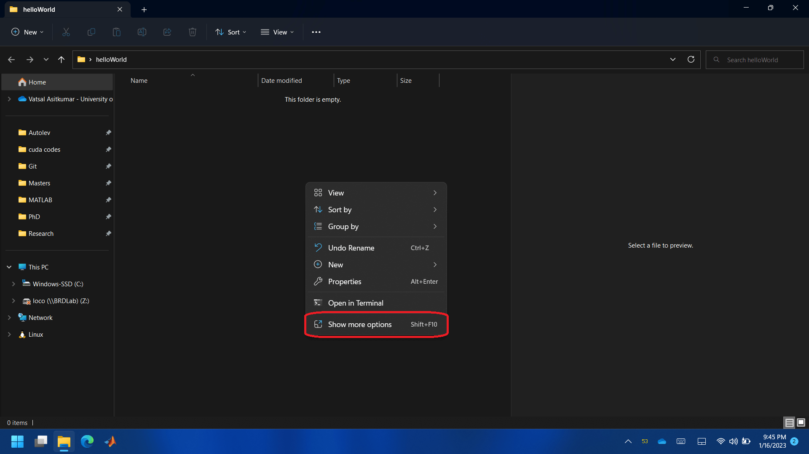
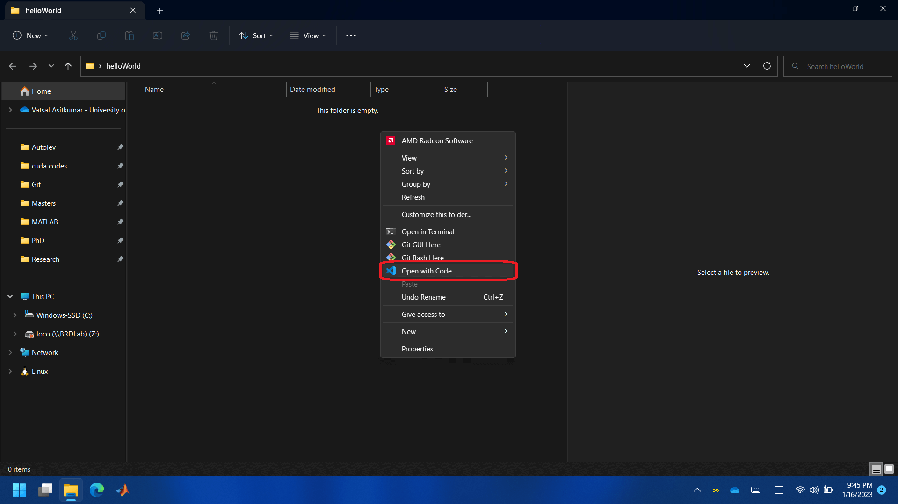


Reopen the folder in WSL. Thus, you’ll have access to the Ubuntu linux terminal from VSCode. Note that once you reopen folder in VSCode with WSL, you’ll see
WSL:Ubuntuwritten in the bottom left green colored area.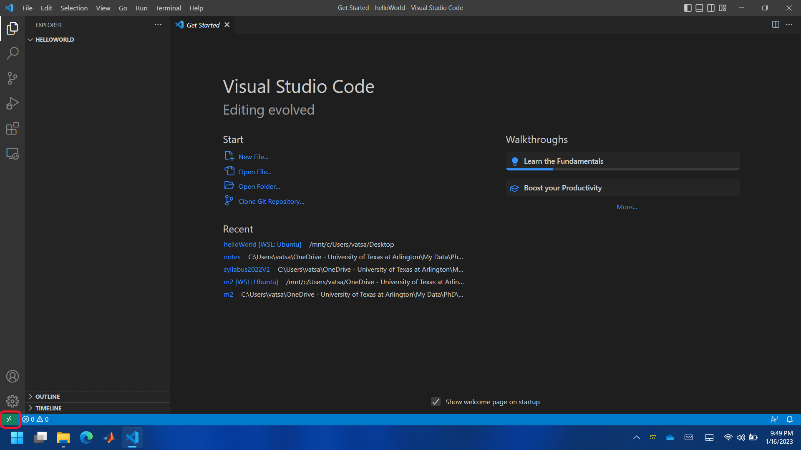

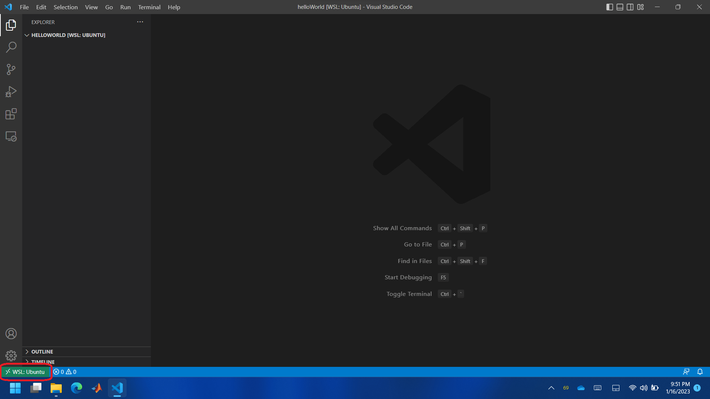
MacOS#
Create a folder with any name you like on the desktop.
Follow the images below to open it in VSCode. The name for the folder in my case is
blink. Note that the bottom accent color of VSCode changes from purple to blue.

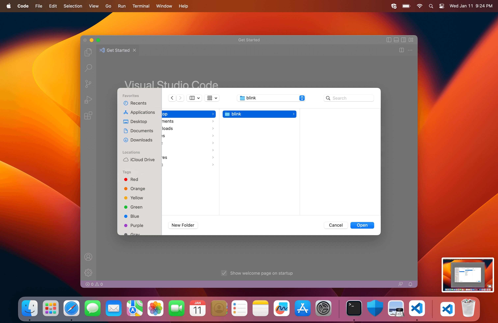
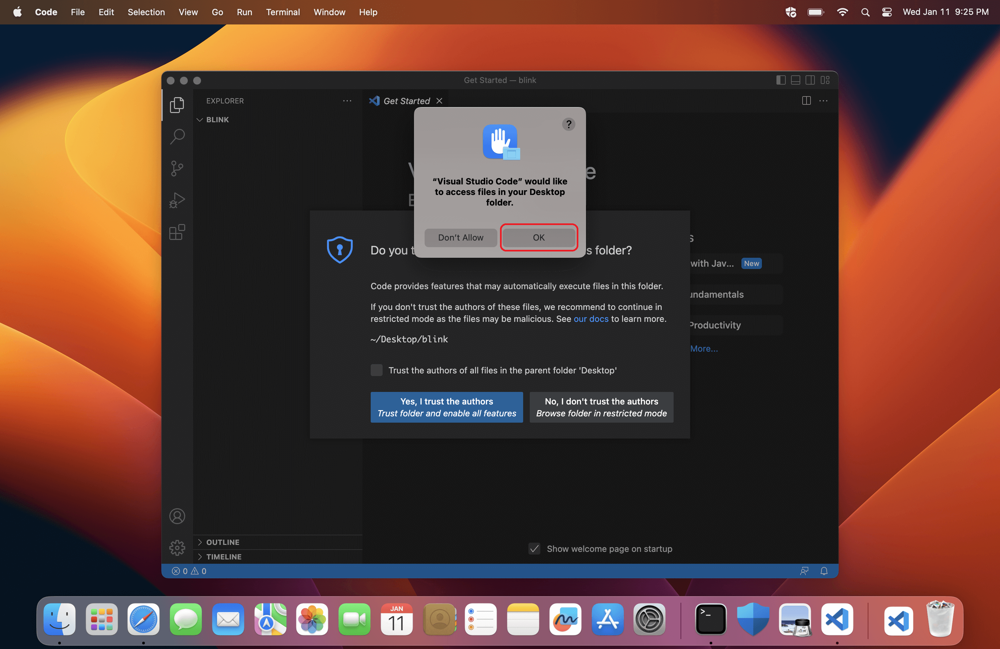

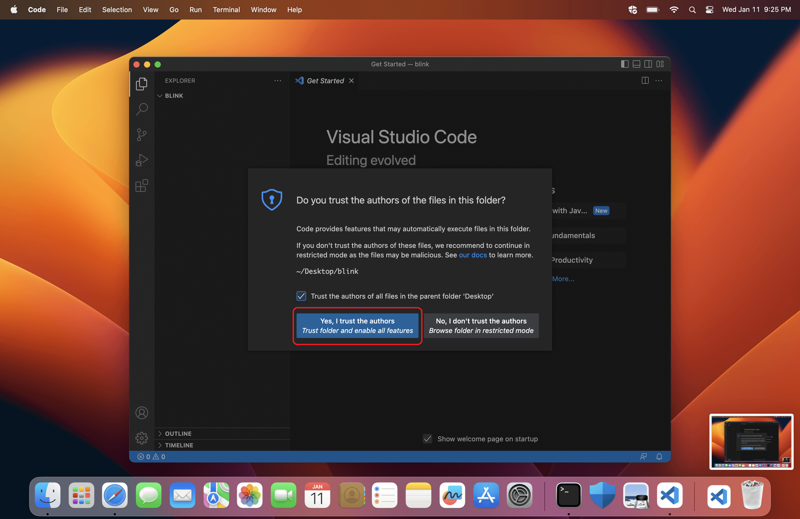

The steps are independent of the operating system from here on.
Create three files with names
helloWorld.cpp,pico_sdk_import.cmakeandCMakeLists.txt. Make sure to createCMakeLists.txtwith correct case, i.e. capital or small. Follwoing images show steps to create a file through VSCode.

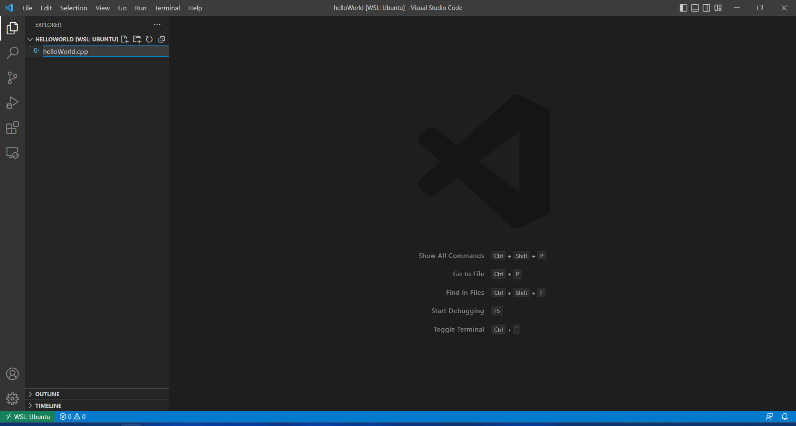
Copy following in
helloWorld.cppfile and save it. You can use ⌃ Control + S (Windows) or ⌘ Command + S (MacOS) to save a file.#include <stdio.h> #include <pico/stdlib.h> #define LED_PIN 25 bool pinState = true; int main() { stdio_init_all(); gpio_init(LED_PIN); gpio_set_dir(LED_PIN, true); gpio_put(LED_PIN, pinState); while (true) { pinState = !pinState; gpio_put(LED_PIN, pinState); printf("Hello World!\r\n"); sleep_ms(1000); } }
Copy following in
pico_sdk_import.cmakefile and save it.# This is a copy of <PICO_SDK_PATH>/external/pico_sdk_import.cmake # This can be dropped into an external project to help locate this SDK # It should be include()ed prior to project() if (DEFINED ENV{PICO_SDK_PATH} AND (NOT PICO_SDK_PATH)) set(PICO_SDK_PATH $ENV{PICO_SDK_PATH}) message("Using PICO_SDK_PATH from environment ('${PICO_SDK_PATH}')") endif () if (DEFINED ENV{PICO_SDK_FETCH_FROM_GIT} AND (NOT PICO_SDK_FETCH_FROM_GIT)) set(PICO_SDK_FETCH_FROM_GIT $ENV{PICO_SDK_FETCH_FROM_GIT}) message("Using PICO_SDK_FETCH_FROM_GIT from environment ('${PICO_SDK_FETCH_FROM_GIT}')") endif () if (DEFINED ENV{PICO_SDK_FETCH_FROM_GIT_PATH} AND (NOT PICO_SDK_FETCH_FROM_GIT_PATH)) set(PICO_SDK_FETCH_FROM_GIT_PATH $ENV{PICO_SDK_FETCH_FROM_GIT_PATH}) message("Using PICO_SDK_FETCH_FROM_GIT_PATH from environment ('${PICO_SDK_FETCH_FROM_GIT_PATH}')") endif () set(PICO_SDK_PATH "${PICO_SDK_PATH}" CACHE PATH "Path to the Raspberry Pi Pico SDK") set(PICO_SDK_FETCH_FROM_GIT "${PICO_SDK_FETCH_FROM_GIT}" CACHE BOOL "Set to ON to fetch copy of SDK from git if not otherwise locatable") set(PICO_SDK_FETCH_FROM_GIT_PATH "${PICO_SDK_FETCH_FROM_GIT_PATH}" CACHE FILEPATH "location to download SDK") if (NOT PICO_SDK_PATH) if (PICO_SDK_FETCH_FROM_GIT) include(FetchContent) set(FETCHCONTENT_BASE_DIR_SAVE ${FETCHCONTENT_BASE_DIR}) if (PICO_SDK_FETCH_FROM_GIT_PATH) get_filename_component(FETCHCONTENT_BASE_DIR "${PICO_SDK_FETCH_FROM_GIT_PATH}" REALPATH BASE_DIR "${CMAKE_SOURCE_DIR}") endif () # GIT_SUBMODULES_RECURSE was added in 3.17 if (${CMAKE_VERSION} VERSION_GREATER_EQUAL "3.17.0") FetchContent_Declare( pico_sdk GIT_REPOSITORY https://github.com/raspberrypi/pico-sdk GIT_TAG master GIT_SUBMODULES_RECURSE FALSE ) else () FetchContent_Declare( pico_sdk GIT_REPOSITORY https://github.com/raspberrypi/pico-sdk GIT_TAG master ) endif () if (NOT pico_sdk) message("Downloading Raspberry Pi Pico SDK") FetchContent_Populate(pico_sdk) set(PICO_SDK_PATH ${pico_sdk_SOURCE_DIR}) endif () set(FETCHCONTENT_BASE_DIR ${FETCHCONTENT_BASE_DIR_SAVE}) else () message(FATAL_ERROR "SDK location was not specified. Please set PICO_SDK_PATH or set PICO_SDK_FETCH_FROM_GIT to on to fetch from git." ) endif () endif () get_filename_component(PICO_SDK_PATH "${PICO_SDK_PATH}" REALPATH BASE_DIR "${CMAKE_BINARY_DIR}") if (NOT EXISTS ${PICO_SDK_PATH}) message(FATAL_ERROR "Directory '${PICO_SDK_PATH}' not found") endif () set(PICO_SDK_INIT_CMAKE_FILE ${PICO_SDK_PATH}/pico_sdk_init.cmake) if (NOT EXISTS ${PICO_SDK_INIT_CMAKE_FILE}) message(FATAL_ERROR "Directory '${PICO_SDK_PATH}' does not appear to contain the Raspberry Pi Pico SDK") endif () set(PICO_SDK_PATH ${PICO_SDK_PATH} CACHE PATH "Path to the Raspberry Pi Pico SDK" FORCE) include(${PICO_SDK_INIT_CMAKE_FILE})
Copy following in
CMakeLists.txtfile and save it.cmake_minimum_required(VERSION 3.13) set(ENV{PICO_SDK_PATH} "~/pico/pico-sdk/") include(pico_sdk_import.cmake) project(helloWorld C CXX ASM) set(CMAKE_C_STANDARD 11) set(CMAKE_CXX_STANDARD 17) pico_sdk_init() add_executable(helloWorld helloWorld.cpp ) pico_add_extra_outputs(helloWorld) pico_enable_stdio_usb(helloWorld 1) target_link_libraries(helloWorld pico_stdlib)
Press ⌃ Control + ⇧ Shift + P (Windows) or ⌘ Command + ⇧ Shift + P (MacOS), and follow the steps shown in the images below. Note that a
buildfolder is created. This folder will contain a*.uf2file when the C++ code is compiled properly.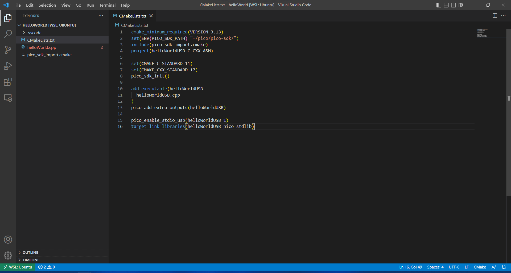

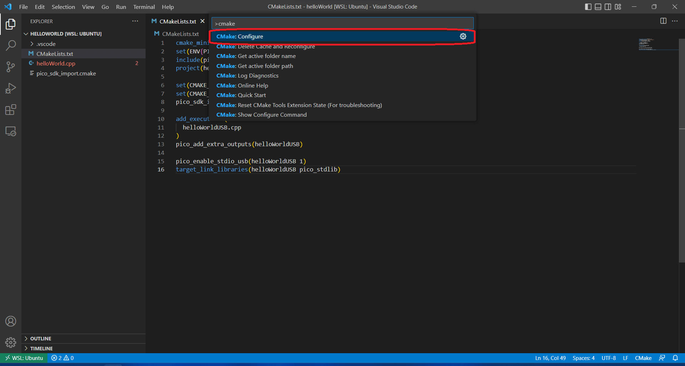
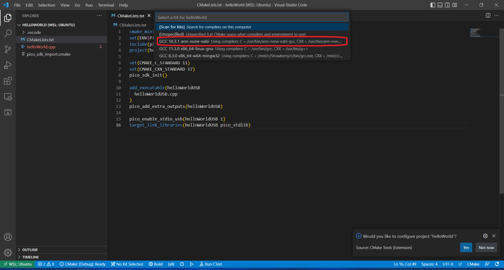
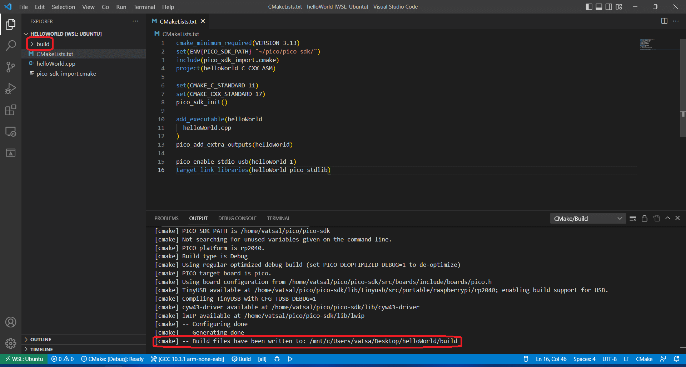